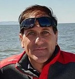

Stefano Zanella
Procurement Commodity Manager at Nidec GA
Nato a Feltre nel 1968, lavoro a Pordenone come Procurement Commodity Manager in Nidec GA, azienda leader nella produzione di "Motors and Compressors for Household & Commercial Appliances".
La mia filosofia
Il mondo ci riserva così tante opportunità di alimentare la nostra sete di conoscenza che dedicare il 100% delle nostre energie ad una sola passione è uno spreco di tempo e risorse oltre che noioso.
I miei interessi
Corsa, tiro con l'arco, pesca, meteorologia, radiotrasmissione, nautica, programmazione, pianoforte e molto altro!